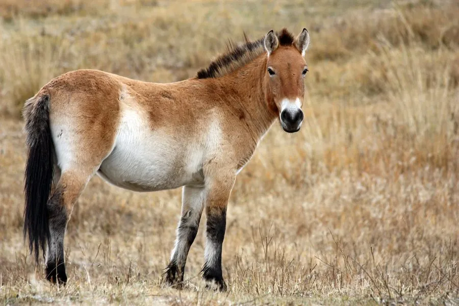

哺乳动物 · 动物界
普氏野马 Equus przewalskii

世界上唯一现存的真正野马，鬃毛直立、没有额毛，曾野外灭绝，经人工繁育后在中国新疆等地重新野化。
- 分类
- 门脊索动物门纲哺乳纲目奇蹄目科马科属马属
- 栖息环境
- 中亚草原与荒漠，偏好干旱开阔、有稀疏水源的草原
- 地理分布
- 原产于中亚草原，现为中国新疆、甘肃与蒙古的野化放归地
- 保护级别
- IUCN 濒危（EN）；中国国家一级保护动物
物种志
普氏野马体长 2.0–2.8 米，肩高 1.2–1.5 米，体重 200–350 kg。它的体形粗壮，毛色为浅黄至沙褐色，腹部和口鼻周围较浅，鬃毛短而直立，没有家马那样的额毛，尾巴上半部毛短、下半部长；冬季毛被更厚，可抵御严寒。
普氏野马原分布于中亚的草原和荒漠，20 世纪 60 年代野外灭绝，现存个体均源自圈养种群。它与家马有染色体差异：普氏野马有 66 条染色体，家马为 64 条。普氏野马结成 5–15 只的群体，由一匹公马带领多匹母马及幼驹，以针茅、芨芨草等为食，善于长时间奔跑，耐力极强。中国自 1985 年起从欧洲引回个体，在新疆卡拉麦里和甘肃敦煌等地进行野化放归，目前已形成野外繁殖种群。由于遗传多样性低、栖息地有限，其生存仍需持续监测与保护。
形态与习性
- 食性针茅、芨芨草等草原植物
- 体长2.0–2.8 m，肩高 1.2–1.5 m
- 体重200–350 kg
- 寿命野外约 20–25 年
- 染色体66 条，家马为 64 条
- 社会结构5–15 只群体，由一匹公马带领
- 特征鬃毛直立、无额毛，尾巴上半部毛短
趣味知识
- 普氏野马是现存唯一的真正野马，比家马多 2 条染色体。
- 它的鬃毛短而直立，没有家马那样的额毛。
- 普氏野马曾在野外灭绝，现存个体都源自圈养种群。
- 中国从 1985 年起引回普氏野马，在新疆和甘肃野化放归。